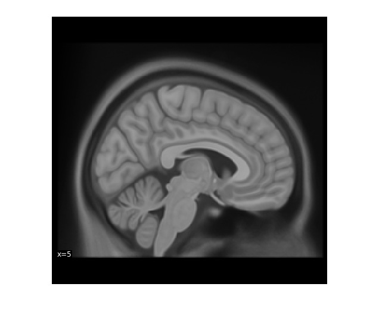
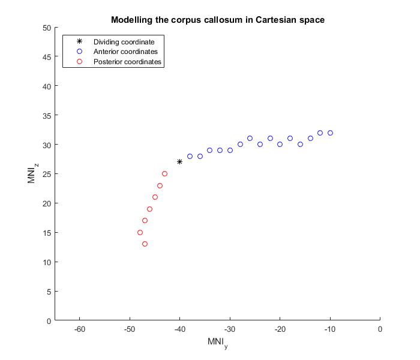
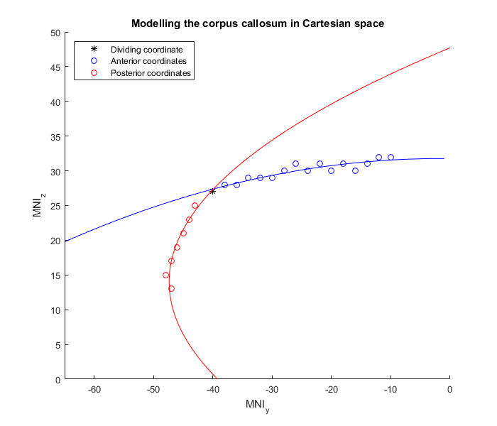
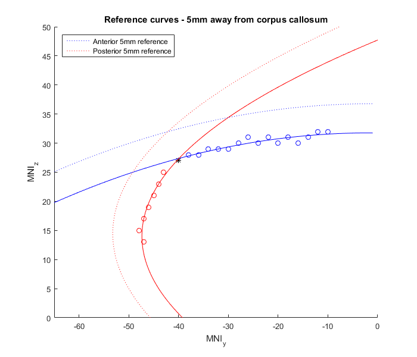
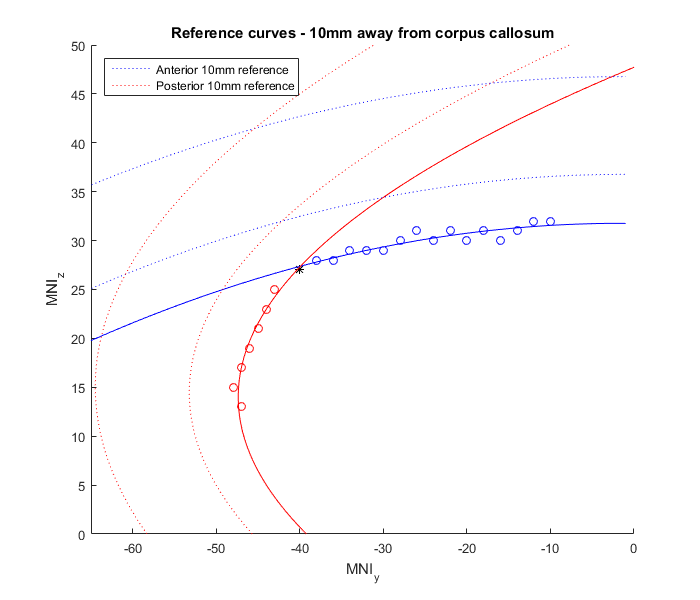
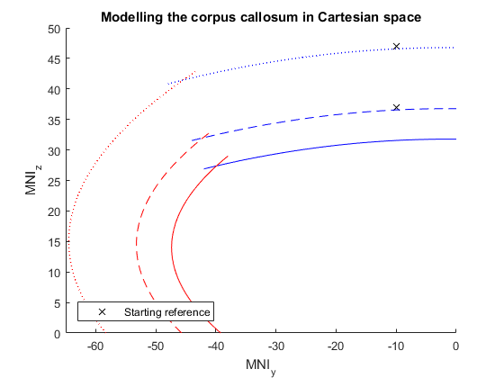
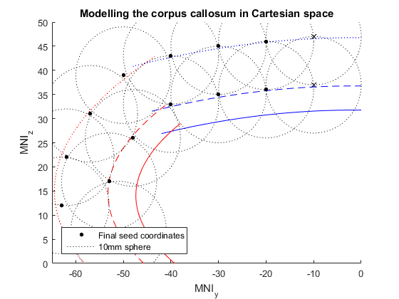

Seed Generation Demo
This notebook is a demonstration of how cingulate seed coordinates were determined for this project.
Contents
Introduction
The method is from Margulies et al. 2009. Seed coordinates were determined using three rules, listed here in order of precedence:
- Seed coordinates are at least 10mm apart.
- The lower seed coordinates are at least 5mm away from the corpus callosum
- The upper seed coordinates are at least 10mm away from the lower seeds.
The first step is to model the curves of the corpus callosum. This was carried out using the MNI 152 brain, using the curvature of the corpus callosum at x=5.
%Prep work clear variables addpath(genpath('./sgen_notebook_data/support_code')); %Figure parameters fig_width = 700; fig_height = 600; xlims = [-65 0]; ylims = [0 50]; %xlab = '(MNI_y)\times-1'; xlab = 'MNI_y'; ylab = 'MNI_z'; %Load MNI 152 T1 slice image imshow('./sgen_notebook_data/mni_152_slice_c.png') snapnow close(gcf)
Modelling the corpus callosum
As you can see from the anatomical image, the shape of the posterior corpus callosum is not amenable to being modeled as one curve. Therefore, we modeled it using an intersection of two second-order polynomials.
The curves were calculated by recording the boundary coordinates of the corpus callousm. Then those coordinates were split into two sets of coordinates on which a second-order polynomial solution could be fitted onto.
Note: because we are restricted to 1mm voxel space, the shape of the corpus callosum can only be described using whole numbers (see anatomical image for reference). However, this allows us to treatthe coordinates as if we are in Cartesian space.
anterior_cc_coords = xlsread('./sgen_notebook_data/callosal_curve_coordinates_cleaned.xlsx', 'UpperCurveCoords'); posterior_cc_coords = xlsread('./sgen_notebook_data/callosal_curve_coordinates_cleaned.xlsx', 'LowerCurveCoords'); %Taking the y, z coordinates to focus on the sagittal curve anterior_cc_yz = anterior_cc_coords(:,2:3); posterior_cc_yz = posterior_cc_coords(:,2:3); %%Corpus callosum modeled in Cartesian space figure; hold on title('Modelling the corpus callosum in Cartesian space'); xlabel(xlab); ylabel(ylab); xlim(xlims); ylim(ylims); %Coordinate that divides the set of coords midPoint = plot(-40, 27, '*k'); %Anterior coordinates len = length(anterior_cc_yz); aset_1 = anterior_cc_yz(2:len, 1); aset_2 = anterior_cc_yz(2:len, 2); anterior_cc_plot = plot(aset_1, aset_2, 'ob'); %Posterior coordinates len = length(posterior_cc_yz); pset_1 = posterior_cc_yz(2:len, 1); pset_2 = posterior_cc_yz(2:len, 2); posterior_cc_plot = plot(pset_1, pset_2,'or'); leg_sub = [midPoint(1), anterior_cc_plot(1), posterior_cc_plot(1)]; legend(leg_sub,'Dividing coordinate',... 'Anterior coordinates','Posterior coordinates','Location','northwest'); set(gcf, 'Position', [100 100 fig_width fig_height],... 'PaperPositionMode', 'auto'); snapnow
Using the two sets of coordinates, we'll solve some second-order polynomials. Then we'll intersect the resulting curves to create a model of the posterior corpus callosum.
x_in = 0:.5:60; xa_ = -66:.2:-1; xb_ = 0:.2:60; %Anterior callosal model xa = anterior_cc_yz(:,1); ya = anterior_cc_yz(:,2); params = polyfit(xa, ya, 2); anterior_polynomial = @(x) params(1)*x.^2 +params(2)*x + params(3); ant_cc_line = anterior_polynomial(x_in); %Posterior callosal model xb = posterior_cc_yz(:,2); %Switch y-axis and x-axis yb = posterior_cc_yz(:,1); params = polyfit(xb, yb, 2); posterior_polynomial = @(x) params(1)*x.^2 + params(2)*x + params(3); post_cc_line = posterior_polynomial(x_in); %Adding polynomials to plot ant_model = plot(xa_, anterior_polynomial(xa_), 'b'); post_model = plot(posterior_polynomial(xb_), xb_, 'r'); set(gcf,'Position',[100 100 fig_width fig_height],... 'PaperPositionMode','auto'); snapnow %close(gcf);
Creating reference curves for coordinate selection
Now that we have a model of the shape of the corpus callosum, we can generate reference curves that will be 5 and 15mm away from it. These new curves are calculated using a parallel curve function (see notebook_data).
%Calculating anterior 5mm reference [~, ~, x_outer, y_outer, ~, ~, ~, ~] = parallel_curve(x_in, ant_cc_line, 5, 0); UC_infEqVals = polyfit(x_outer, y_outer, 2); UC_infEq = @(x) UC_infEqVals(1)*x.^2 + UC_infEqVals(2)*x + UC_infEqVals(3); UC_infLine = UC_infEq(x_in); %Calculating posterior 5mm reference [~, ~, x_outer, y_outer, ~, ~, ~, ~] = parallel_curve(x_in, post_cc_line, 5, 0); LC_infEqVals = polyfit(x_outer, y_outer, 2); LC_infEq = @(x) LC_infEqVals(1)*x.^2 + LC_infEqVals(2)*x + LC_infEqVals(3); LC_infLine = LC_infEq(x_in); title('Reference curves - 5mm away from corpus callosum'); inf_line_1 = plot(xa_, UC_infEq(xa_), 'b:'); inf_line_2 = plot(LC_infEq(xb_), xb_, 'r:'); leg_sub = [inf_line_1(1), inf_line_2(1)]; legend(leg_sub, 'Anterior 5mm reference','Posterior 5mm reference',... 'Location','northwest'); snapnow
Now that we have our 5mm reference, let's add the 10mm reference.
%Calculating anterior 10mm reference [~, ~, x_outer, y_outer, ~, ~, ~, ~] = parallel_curve(x_in, UC_infLine, 10, 0); UC_supEqVals = polyfit(x_outer, y_outer, 2); UC_supEq = @(x) UC_supEqVals(1)*x.^2 + UC_supEqVals(2)*x + UC_supEqVals(3); UC_supLine = UC_supEq(x_in); %Calculating posterior 10mm reference [~, ~, x_outer, y_outer, ~, ~, ~, ~] = parallel_curve(x_in, LC_infLine, 10, 0); LC_supEqVals = polyfit(x_outer,y_outer,2); LC_supEq = @(x) LC_supEqVals(1)*x.^2 + LC_supEqVals(2)*x + LC_supEqVals(3); LC_supLine = LC_supEq(x_in); title('Reference curves - 10mm away from corpus callosum'); sup_line_1 = plot(xa_, UC_supEq(xa_), 'b:'); sup_line_2 = plot(LC_supEq(xb_), xb_, 'r:'); leg_sub = [sup_line_1(1), sup_line_2(1)]; legend(leg_sub, 'Anterior 10mm reference','Posterior 10mm reference',... 'Location','northwest'); snapnow close(gcf)
Final reference model
Now that we have a reference on where we should center our seed coordinates, we can start choosing proper seed coordinates. As this method is a replication of the Margulies et al. 2009 study, we use their posterior-most seeds as a starting point.
%Replotting and trimming the model, reference curves for clarity figure; hold on title('Modelling the corpus callosum in Cartesian space'); xlabel(xlab); ylabel(ylab); xlim(xlims); ylim(ylims); original_inferior = plot(-10, 37,'kx'); original_superior = plot(-10,47,'kx'); UCMx = -42:.1:0; LCMx = 0:.1:29; UpperCurveModel = plot(UCMx, anterior_polynomial(UCMx), 'b'); LowerCurveModel = plot(posterior_polynomial(LCMx), LCMx,'r'); UISCx = -44:.1:0; LISCx = 0:.1:33; UpperInferiorSeedCurve = plot(UISCx, UC_infEq(UISCx),'b--'); LowerInferiorSeedCurve = plot(LC_infEq(LISCx),LISCx,'r--'); USSCx = -48:.1:0; LSSCx = 0:.1:43; UpperSuperiorSeedCurve = plot(USSCx,UC_supEq(USSCx),'b:','LineWidth',1); LowerSuperiorSeedCurve = plot(LC_supEq(LSSCx),LSSCx,'r:','LineWidth',1); leg_sub = [original_inferior(1)]; legend(leg_sub, 'Starting reference','Location','southwest'); snapnow
Selecting seed coordinates
Instead of going through the pain-staking process of making sure that coordinates adhered to the reference lines as closely as possible and were at least 10mm apart, we'll display the final results and include 10mm spheres centered on the final yz-coordinates to ensure 10mm spacing.
inferior_seeds = [-20 36 -30 35 -40 33 -48 26 -53 17 -51 7]; inf_seeds = plot(inferior_seeds(:,1),inferior_seeds(:,2),'ok','MarkerSize',3.5,'MarkerFaceColor','k'); circle(-10,37,10); for index = 1:length(inferior_seeds) circle(inferior_seeds(index,1),inferior_seeds(index,2),10); end superior_seeds = [-20 46 -30 45 -40 43 -50 39 -57 31 -62 22 -63 12]; k = plot(superior_seeds(:,1),superior_seeds(:,2),'ok','MarkerSize',3.5,'MarkerFaceColor','k'); circle(-10,47,10); for index = 1:length(superior_seeds) circle(superior_seeds(index,1),superior_seeds(index,2),10); end rad_ref = plot(1000,1000,':k'); legend_subset = [k(1), rad_ref(1)]; legend(legend_subset,'Final seed coordinates','10mm sphere','Location','southwest'); snapnow close(gcf)